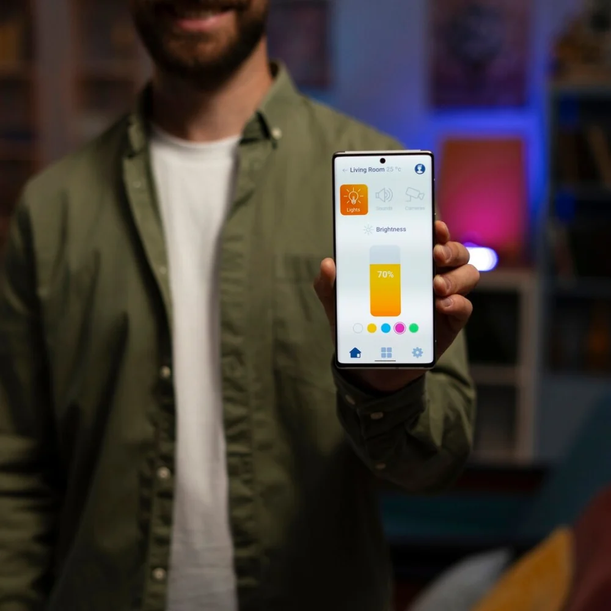

App Development
Company Services
Cypherox is an app development company that builds custom mobile and web applications, from initial architecture through ongoing support, for businesses that need more than a template can offer.
When an App Idea Needs More Than a Freelancer Can Deliver
Building an application involves more than writing code; it requires architecture that supports growth, integration with existing systems and a delivery process that catches problems before launch, not after. A single freelancer or an undersized team can build something that works initially but struggles once the app needs to scale, add features, or integrate with backend systems it wasn't originally designed around.
Undersized teams struggle once apps need to scale.
Poor initial architecture makes later features costly to add.
Missing integration planning creates rework once systems connect.
Inconsistent testing lets issues reach users after launch.
Scalable Architecture
Built to support growth, not just the initial feature set.
Cross-Platform Capability
Native or cross-platform builds suited to your actual requirements.
System Integration
Connects to backend systems and APIs as part of the build, not an afterthought.
Full Delivery Team
Backend, frontend and QA working together, not a single generalist.
Custom App Development
Built Around Your
Requirements
We scope app development around what the application needs to do and the platforms it needs to run on, from native builds to backend systems.
iOS App Development
Builds native iOS applications optimized for performance and platform conventions.
Have a Project in Mind? →Android App Development
Builds native Android applications suited to the platform's design and technical standards.
Have a Project in Mind? →Cross Platform App Development
Builds applications that run on both iOS and Android from a shared codebase where appropriate.
Have a Project in Mind? →Custom App Development
Builds applications with custom logic, user accounts and business-specific functionality.
Have a Project in Mind? →Backend and API Development
Builds the server-side systems and APIs that power app functionality and data handling.
Have a Project in Mind? →App Modernization and Rebuild
Rebuilds an existing app on a modern, maintainable technical foundation.
Have a Project in Mind? →Ship an App That
Holds Up After
Launch
Custom app development reduces the risk of costly rework once real users start relying on the app. Performance holds up as usage grows, new features get added without destabilizing existing functionality and integration with backend systems removes the manual work that would otherwise sit outside the app entirely.
Reduces costly rework caused by weak initial architecture.
Maintains performance and stability as usage grows.
Adds new features without destabilizing existing functionality.
Removes manual work through direct backend integration.

Talk Through Your App Development Requirements
Speak with someone who will ask about your app idea, required platforms and the systems it needs to connect to, then outline a practical approach.
Book a CallHire Dedicated Developers
Engineers deliver app development projects across mobile, backend and QA, embedded in your delivery process rather than handed off as a single build.
Hardik
Senior AI and ML Engineer
Available NowBuilds production AI systems with LLM integration, agent orchestration and ML pipelines. Handles model evaluation, RAG and deployment.
Skills:
Krupa
Senior Full Stack Engineer
Available NowDelivers web and mobile applications across frontend, backend and API layers. Works with modern frameworks, databases and cloud pipelines.
Skills:
Akash
Senior Cloud and DevOps Engineer
Available NowArchitects cloud infrastructure with automated deployment, monitoring and security: container orchestration, IaC and cost optimization.
Skills:
App Development Built Around Your Industry
The right app development approach depends on the platforms your users are on and the functionality the app needs to support.
Ecommerce and Retail
Retail apps need custom development supporting product browsing, checkout and account features at scale.
- Builds shopping and checkout flows connected to inventory systems.
- Supports push notifications for offers and order updates.
- Scales to handle peak shopping period traffic.
Healthcare
Healthcare apps need custom development that handles sensitive data with strict security and compliance requirements.
- Builds secure, compliant patient data handling.
- Supports appointment booking and record access features.
- Designs with accessibility as a core requirement.
On Demand and Marketplace
Marketplace apps need custom development supporting two-sided user flows and real-time updates.
- Builds separate but consistent buyer and seller experiences.
- Supports real-time booking and status update features.
- Scales to handle concurrent user activity reliably.
Financial Services
Finance apps need custom development with strong security and compliant transaction handling.
- Builds secure transaction and account management features.
- Supports compliant authentication and data handling.
- Integrates with core banking or payment systems.
How We Design, Build and
Deploy Your App
The process moves from understanding your requirements through design, development, testing and deployment, with support once the app is live.
The Technology Behind
Your App
We build applications using modern mobile frameworks, backend languages and cloud infrastructure suited to your specific requirements.
What
Clients Say
App Development
Questions Answered
These are the questions we hear most often from businesses evaluating app development services, covering platforms, scope, timelines and ongoing support.
This depends on performance needs, budget and target platforms. Native development suits apps needing deep platform integration, while cross-platform can reduce cost when requirements are simpler.
Yes, we build the application alongside the backend APIs and infrastructure it depends on, so the two are designed to work together from the start.
Timelines depend on platform choice and feature complexity. A focused app with limited features moves faster than one with extensive backend logic and integrations.
Yes, we review the existing codebase first to assess its condition, then advise whether to continue building on it or move toward a modernized rebuild.
We test apps across devices, operating system versions and real usage scenarios to catch issues before they reach users.
Yes, the architecture is designed with growth in mind from the start, so scaling doesn't require a full rebuild as usage increases.
We provide ongoing development, monitoring and maintenance support after launch, addressing issues and adding features as requirements evolve.
Let's Build
Your App
If you are evaluating an app development project, the next step is a conversation about your idea and requirements. We will outline a realistic path before anything is committed.